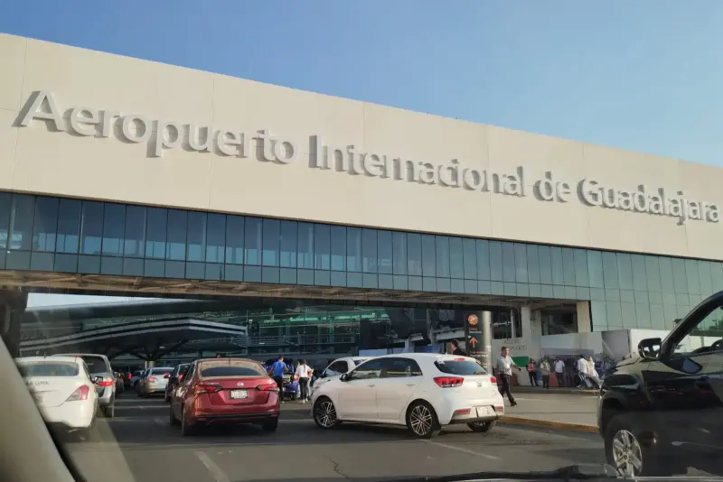

Traslados privados del aeropuerto de Guadalajara a Los Altos de Jalisco
Del Aeropuerto Internacional de Guadalajara a la puerta de tu casa en Tepatitlán, Arandas, San Miguel el Alto y los demás pueblos de Los Altos. Precio por vehículo, casetas incluidas.
Cotizar por WhatsApp
Llegar a casa sin vueltas
Si vienes de Estados Unidos a ver a tu familia, sobre todo en diciembre, lo último que quieres al aterrizar es buscar camión o negociar un taxi. Te esperamos en la salida con un letrero con tu nombre, subimos tus maletas y te llevamos directo a tu casa en Los Altos.
El servicio también es para familias de la región que necesitan ir a recibir o a dejar a alguien al aeropuerto de Guadalajara. Un solo vehículo, un precio cerrado por zona y sin compartir el viaje con desconocidos.
Precios por zona
Precio "desde", por vehículo, del aeropuerto de Guadalajara a tu pueblo. Casetas incluidas. Si necesitas factura, se agrega el IVA.
| Zona | Pueblos | Precio desde |
|---|---|---|
| Cercana | Zapotlanejo, Tototlán, Tierras Coloradas, Acatic | $2,000 MXN |
| Tepatitlán | Tepatitlán, Capilla de Guadalupe, Pegueros, Valle de Guadalupe, San Ignacio Cerro Gordo | $2,800 MXN |
| Arandas y sur | Arandas, Jesús María, Atotonilco, Ayotlán | $3,500 MXN |
| Lejana | Jalostotitlán, San Miguel el Alto, Degollado | $4,200 MXN |
| Con cotización previa | Yahualica, Teocaltiche, ranchos y pueblos circunvecinos | Por WhatsApp |
- Hasta 4 pasajeros por vehículo para viajar cómodos. Si son más, cotizamos según el grupo.
- Recargo nocturno de $500 MXN de 10:00 pm a 6:00 am.
Qué incluye el traslado
Recepción con letrero
Te esperamos en la salida de llegadas con tu nombre a la vista.
Monitoreo del vuelo
Seguimos tu vuelo para estar ahí cuando aterrices, aunque cambie la hora.
Espera incluida
Migración y maletas toman tiempo; el chofer te espera.
Ayuda con el equipaje
Subimos y bajamos tus maletas del vehículo.
Puerta a puerta
Te dejamos en la dirección que nos indiques, no en una terminal de autobuses.
Viaje de regreso al aeropuerto
Cuando termine tu visita, también pasamos por ti a tu casa en Los Altos y te llevamos al aeropuerto de Guadalajara para tu vuelo de salida. Puedes apartar la ida y el regreso en el mismo mensaje; dinos la fecha y la hora de tu vuelo de salida. El regreso tiene la misma tarifa por zona que la ida, con el mismo recargo nocturno si aplica.
Cotizar el regresoCómo reservar
- Escríbenos por WhatsApp con tu número de vuelo, la fecha, cuántos pasajeros son y a qué pueblo vas.
- Te confirmamos el precio de tu zona y los recargos que apliquen.
- Apartas con un anticipo de $500 MXN, que se descuenta del total.
- El día de tu llegada te esperamos en la salida con tu letrero.
Formas de pago
El anticipo de $500 MXN confirma tu traslado y se descuenta del total.
Efectivo USD
Paga en dólares en efectivo el día del servicio.
Transferencia Higlobe
Titular:
Octavio Jacob Orozco Gonzalez
Banco receptor:
Cross River Bank, 885 Teaneck Road, Teaneck NJ 07666
Número de cuenta:
344990447544
Routing #:
021214891
Sin comisión para el cliente
Incluye la fecha de tu traslado en el memo. Permite 2-3 días hábiles para procesar.
Preguntas frecuentes
Cotiza tu traslado a Los Altos
Mándanos tu vuelo, la fecha, cuántos pasajeros son y tu pueblo.
Cotizar por WhatsApp¿Te quedas en Guadalajara? Consulta el traslado aeropuerto dentro de la ciudad.